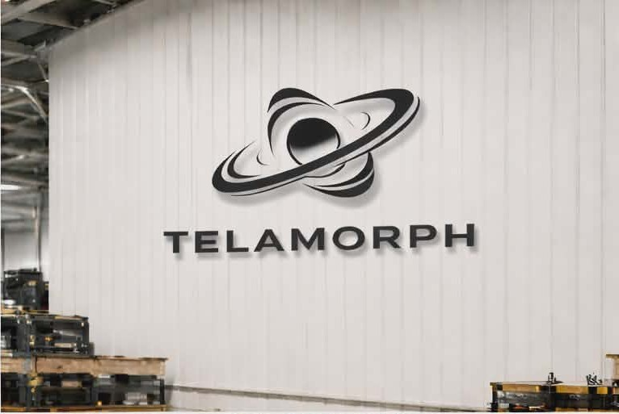

Project Intake
We define the vehicle, part list, target look, aerodynamic intent, finish, budget range, and expected production volume.
For automotive brands, specialist workshops, and builders who need more than a styled render. Telamorph turns vehicle scans, CAD, and performance goals into prototype parts, validated fitment, and repeatable carbon fiber production.
Every project is staged so the design can survive real manufacturing. We start with vehicle geometry and intent, then move through surfaces, tooling, prototype fitment, and production planning before committing to a run.
If you already have CAD, we can begin at manufacturability review. If you only have a vehicle and a direction, we can scan, model, and develop the package from the ground up.
We define the vehicle, part list, target look, aerodynamic intent, finish, budget range, and expected production volume.
Vehicle surfaces, mounting zones, shut lines, and critical clearances are captured so the kit is designed around real fitment.
We build production-aware surfaces, split lines, mounting logic, and tooling strategy before expensive material is committed.
Low-volume tooling, printed fixtures, or machined bucks let you hold, test, and refine the kit before production tooling.
Prototype parts are checked against the vehicle for gaps, fastening, stiffness, service access, finish quality, and install repeatability.
Once the kit is approved, we prepare tooling, layup schedules, inspection points, and batch documentation for repeatable runs.

A good body kit needs more than visual drama. Mounting, mold release, clear coat strategy, weave direction, packing, and repairability all shape the final part.
Body-kit programs for teams that need a controlled path from idea to installed part.
Signature aero packages, splitters, lips, side skirts, diffusers, widebody parts, and limited-run carbon accessories.
Functional pieces developed around stiffness, service access, cooling, downforce targets, and fast replacement.
Low-volume packages for OEM-style builds, dealer programs, restomods, and private-label launches.
High-impact one-off panels and visual prototypes that can later be adapted for repeatable manufacture.
Reverse-engineered composite replacements for legacy platforms where original drawings are missing or incomplete.
Carbon trim, aero upgrades, roof integration, and platform-specific accessories for larger performance vehicles.
The same team that develops the surfaces also thinks through tooling, layup, finishing, inspection, and packaging. That keeps the launch practical and makes future batches easier to repeat.
View CapabilitiesWe review draft, flanges, split lines, thickness, fastening, and finish requirements before finalizing the part.
Physical checks catch fitment, install, and visual issues while the project is still inexpensive to change.
Mounting points, jigs, and inspection references are planned so the kit installs consistently across a batch.
Material selection, layup method, clear coat, and finishing expectations are defined before quote approval.
A short project brief is enough to start. Send what you have, and we will tell you what is missing before we price the next step.
Tell us what stage the project is in. We can quote scanning, development, prototype parts, production tooling, or a complete launch path.